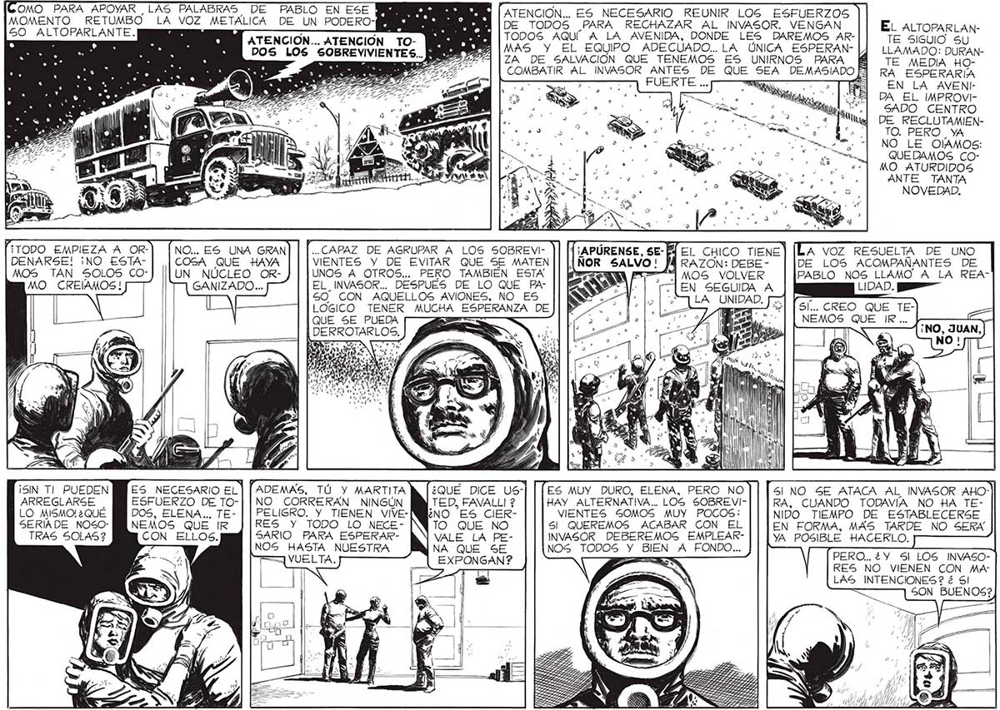

80 [Como PARA APOYAR LAS PALABRAS DE PABLO EN ESE : LA a TO ma MOMENTO, RETUMBO LA VOZ METALICA DE UN PODERO IN Y [ ATENCION... ES E 5 DE TODOS PARA RECHAZAR AL INVASOR. VENGAN EL ALTOP> 50 ALTOPARLANTE. ATENCION... ATENCION TO- AY [TODOS AQUÍ A LA AVENIDA, DONDE LES DAREMOS AR- TE o e 77% | ZA DE SALVACIÓN QUE TENEMOS ES UNIRNOS PARA ( TE MEDIA Ho: : COMBATIR AL INVASOR ANTES DE QUE SEA DEMASIADO Fl] RA ESPERARIA FUERTE . EN LA AVENF DA EL IMPROVISADO CENTRO DE RECLUTAMIENTO. PERO YA NO LE OÍAMOS: QUEDAMOS COMO ATURDIDOS ANTE TANTA NOVEDAD. ¡TODO EMPIEZA A OR- NO... ES UNA GRAN] | [..CAPAZ DE AGRUPAR A LOS SOBREVI- PÚRENSE, SE- 14 El CHICO TIENE A VOZ RESUELTA DE UNO DENARSE! ¡NO ESTA- COSA QUE HAYA VIENTES Y DE EVITAR QUE SE MATEN ÑOR SALVO! MÁ RAZON: DEBE - DE LOS ACOMPAÑANTES DE MOS TAN SOLOS CO-] [[UN NÚCLEO OR- UNOS A OTROS... PERO TAMBIÉN ESTA e dl MOS VOLVER PABLO NOS LLAMO A LA REAMO CREAMOS! GANIZADO... EL_ INVASOR... DESPUES DE LO QUE PA- Sy. LEN SEGUIDA A 50 CON AQUELLOS AVIONES, NO ES : “Lo | LA UNIDAD. | LÓGICO TENER MUCHA ESPERANZA DEJ| B ys isa SÍ... CREO QUE TE|QUE SE PUEDA NEMOS QUE IR ... | DERROTARLOS. ¡SIN Tl PUEDEN YES NECESARIO EL] | ADEMAS, TÚ Y MARTITA ¿QUE DICE US-| | [ES MUY DURO, ELENA, PERO NO SI NO 5E ATACA AL INVASOR AHOARREGLARSE ESFUERZO DE TO-| | NO CORRERAN NINGÚN TED, FAVALLI 2 HAY ALTERNATIVA... LOS SOBREVI- RA, CUANDO TODAVÍA NO HA TELO MISMO! ¿QUÉ DOS, ELENA... TE- | | PELIGRO. Y TIENEN VIVE- VIENTES SOMOS MUY POCOS: NIDO TIEMPO DE ESTABLECERSE SERIÍADE NOSO- Y NEMOS QUE IR RES Y TODO LO NECE- SI QUEREMOS ACABAR CON_EL EN FORMA, MAS TARDE NO SERA TRAS SOLAS ? CON ELLOS. SARIO PARA ESPERAR- VALE LA PE- INVASOR DEBEREMOS EMPLEAR- YA POSIBLE HACERLO. | NOS HASTA NUESTRA NA QUE SE NOS TODOS Y BIEN A FONDO... PERO EY Sl LOS INVAZO 2 pp ii RES NO VIENEN CON MALAS INTENCIONES? é SI
